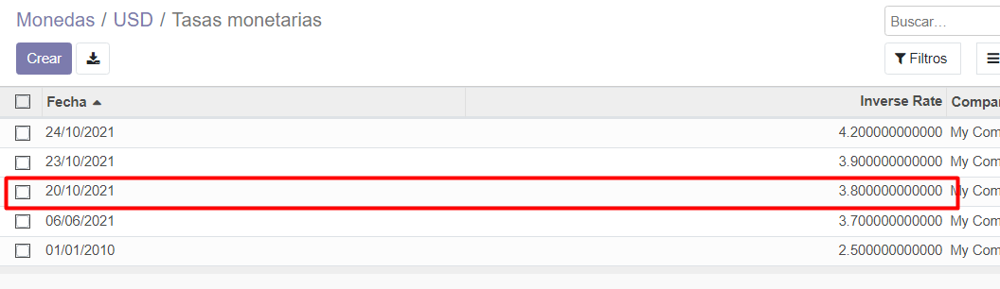
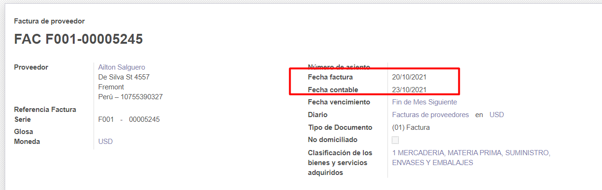
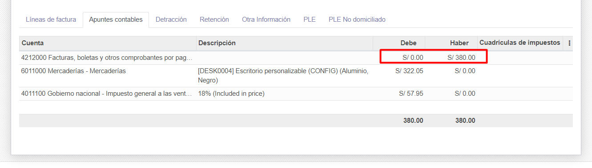
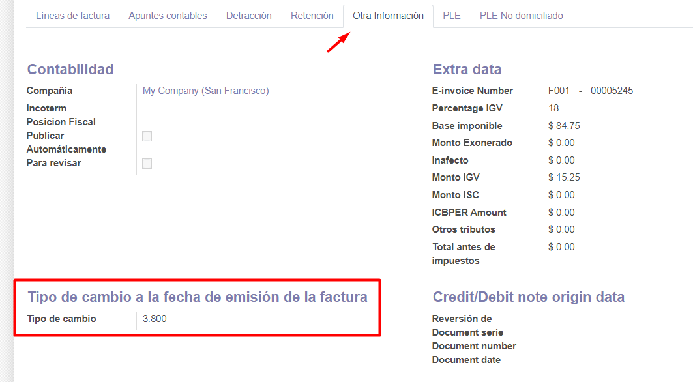

1. (Community) Activamos la opción de contabilidad.

2. Configuramos un tipo de cambio a la fecha.

3. Registramos una factura con fecha de emisión.

4. Observamos el asiento contable generado en moneda local.

5. También se puede observar el tipo de cambio desde la pestaña de Otra información.
